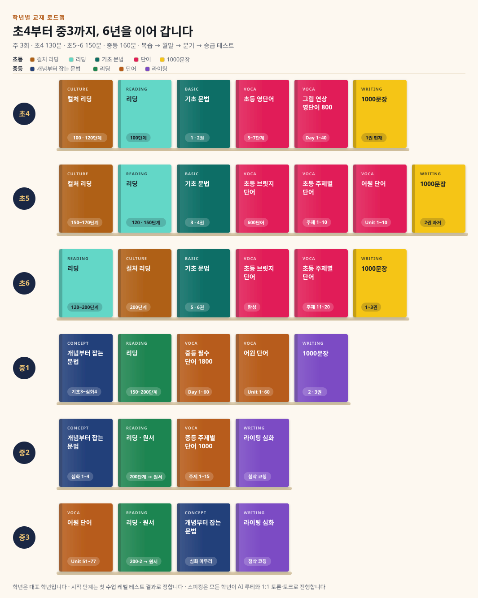

아이들이 막히는 자리에서 만든 커리큘럼
수업을 하다 보면 아이들은 늘 비슷한 자리에서 막힙니다. 그 자리를 넘기려고 교재와 온라인 학습 시스템을 직접 만들었습니다.
왜 직접 만들었나
교재는 평균을 향해 만들어집니다
시중 교재는 잘 만들어져 있습니다. 다만 교재 한 권은 여러 학생의 평균을 향해 쓰입니다. 실제 수업에서는 아이마다 막히는 자리가 다르고, 그 자리는 교재가 따로 다뤄 주지 않습니다.
프라미스A는 그 지점을 수업에서 계속 보아 왔습니다. 그래서 아예 교재부터 새로 썼습니다. 리딩 · 문법 · 라이팅 트레이닝 세 갈래이고, 여러 번 반복해야 넘어가는 부분은 온라인 학습 시스템으로 옮겨 집에서도 이어서 하도록 했습니다.
커리큘럼이 도는 방식
수업에서 끝나지 않고 한 바퀴를 돕니다
다섯 단계가 계속 돌면서, 안 되는 부분이 그냥 지나가지 않게 합니다.
-
수업에서 그 자리에서 확인
오늘 배운 것을 바로 확인합니다. 모르는 채로 다음으로 넘어가지 않습니다.
-
온라인 학습 시스템으로 반복
수업에서 걸린 STEP을 집에서 온라인으로 다시 합니다. 무엇을 얼마나 했는지 기록으로 남습니다.
-
독해 시스템으로 훈련
단어 · 문장 · 문단 · 글 전체로 넓혀 가며, 해석이 아니라 이해로 읽게 합니다.
-
학습 분석으로 점검
맞고 틀린 개수가 아니라, 어디에서 반복해서 막히는지를 봅니다.
-
다음 수업에 반영
분석에서 나온 지점이 다음 수업의 다지기 내용이 됩니다. 그래서 한 바퀴가 다시 돕니다.
독해 시스템
“해석은 되는데 무슨 말인지 모르겠다”를 없애는 것
독해가 안 되는 학생 대부분은 단어를 몰라서가 아닙니다. 단어를 이어 붙여 해석은 하는데, 글이 무엇을 말하는지 잡히지 않는 상태입니다. 프라미스A의 독해 시스템은 이 상태를 겨냥합니다.
넓혀 가며 읽습니다
단어에서 문장으로, 문장에서 문단으로, 문단에서 글 전체로 단계를 올립니다. 한 단계가 되지 않으면 다음 단계로 넘기지 않습니다.
자기 말로 되돌려 확인합니다
읽은 내용을 자기 말로 쓰게 합니다. 쓰지 못하면 읽은 것이 아니라고 봅니다. 라이팅을 독해 확인의 수단으로 씁니다.
막힌 지점을 기록합니다
어느 문장에서 멈췄는지, 어떤 유형에서 반복해서 걸리는지 남깁니다. 이 기록이 학습 분석의 재료가 됩니다.
문해력까지 이어 갑니다
영어 문장을 읽어내는 힘은 우리말 문해력과 함께 갑니다. 글의 구조와 의도를 잡는 훈련을 같이 합니다.
온라인 학습 시스템
교재와 온라인이 한 몸으로 돕니다
수업 시간을 반복 훈련에만 쓰기에는 아깝습니다. 그래서 여러 번 되풀이해야 넘어가는 부분은 온라인으로 옮겼습니다. 교재의 같은 STEP이 온라인에도 있어, 수업에서 걸린 자리를 집에서 그대로 이어 갑니다.
수업과 이어집니다
- 그날 수업에서 걸린 부분이 그대로 이어집니다
- 새 내용이 아니라 다지기용입니다
- 짧게, 자주 하도록 구성했습니다
기록이 남습니다
- 언제 얼마나 했는지 남습니다
- 어떤 유형에서 자주 틀리는지 쌓입니다
- 이 기록이 학습 분석으로 이어집니다
학습 분석
점수보다 “어디서 막히는가”를 봅니다
같은 70점이라도 이유는 다릅니다. 단어가 안 잡힌 학생, 문장 구조에서 무너지는 학생, 알면서 시간에 쫓겨 틀리는 학생은 해야 할 일이 각각 다릅니다.
이런 것을 봅니다
- 반복해서 걸리는 유형
- 혼자 할 때와 확인받을 때의 차이
- 과제 수행과 학습태도의 흐름
이렇게 씁니다
- 다음 수업의 다지기 내용을 정합니다
- 교재 단계를 올릴지 판단합니다
- 상담 때 근거로 보여 드립니다
학습 분석은 학생을 줄 세우기 위한 것이 아닙니다. 무엇을 더 해야 하는지 학생과 학부모님이 같이 알기 위한 기록입니다.
교재 라인
교재까지 직접 만들었습니다
시중 교재를 쓰다가 아쉬웠던 부분을 모아, 교재를 직접 만들었습니다. 리딩 · 문법 · 라이팅 세 갈래로 나뉘고, 학년이 아니라 단계로 올라갑니다.
Seed에서 Fruit까지, 네 단계
소리 내어 읽기부터
문장을 늘려 가기
구조를 꿰기
스스로 써내기
단계는 나이가 아니라 상태로 정합니다. 중학생이어도 Seed부터 다시 하는 경우가 있고, 그게 결국 더 빠릅니다. 첫 수업에서 확인한 뒤 단계를 정해 구매 링크를 보내 드립니다.
교재 세 갈래
교재와 수업의 목표
| 교재 | 교재가 맡는 몫 | 수업에서 하는 것 | 목표 |
|---|---|---|---|
| 리딩 교재 | 짧은 글, 소리 내어 읽기 | 끊어 읽고 되짚으며 이해했는지 확인 | 읽은 내용을 자기 말로 설명하기 |
| 문법 교재 | 문장 확장 → 분사·관계사까지 단계별 STEP | 규칙을 외우는 대신 문장에 적용해 확인 | 긴 문장의 구조를 스스로 잡아내기 |
| 라이팅 트레이닝 | 국어로 쓰기 → 빈칸 → 전체 라이팅 | 쓴 것을 문장 단위로 첨삭 | 학교 서술형 문항에서 자기 문장 쓰기 |
| 학교 교과서 · 부교재 | 시험 범위에 맞춰 병행 | 내신 대비 | |
교재는 첫 수업 후 학생 상태를 보고 단계를 정합니다. 정해지면 교재 구입 링크를 보내 드리고, 학부모님께서 직접 구입하셔서 보내 주시면 됩니다. 교습소에서 교재비를 따로 받지는 않습니다. 레벨테스트는 등록 후 첫날 수업에서 진행합니다.
학년별 교재 로드맵
초4부터 중3까지, 6년을 이어 갑니다
단어 · 리딩 · 문법 · 라이팅 · 듣기 · 말하기를 직접 만든 교재와 온라인 학습으로 한 단계씩 이어 갑니다. 온라인에서 한 단원을 그대로 종이 교재로 다시 만나고, 달마다 월말 평가로 확인합니다.
- 주 3회 수업
- 초4 130분 · 초5~6 150분 · 중등 160분
- 온라인 학습 → 같은 단원 종이 교재
- 복습 · 월말 · 분기 · 승급 테스트

- 초등
- 컬처 리딩
- 리딩
- 기초 문법
- 단어
- 1000문장
- 중등
- 개념부터 잡는 문법
- 리딩
- 단어
- 라이팅
-
초4 초등 4학년
짧은 글을 스스로 읽고 이해하는 힘을 기르고, 문법의 첫 단추를 끼웁니다.
- CULTURE READING 컬처 리딩 100 · 120단계
- READING 리딩 100단계
- BASIC GRAMMAR 기초 문법 1 · 2권
- VOCA 초등 영단어 5~7단계
- VOCA 그림 연상 영단어 800 Day 1~40
- WRITING 1000문장 1권 현재
-
초5 초등 5학년
긴 지문과 다양한 주제로 독해를 넓히고, 문장 구조를 차근히 잡아 갑니다.
- CULTURE READING 컬처 리딩 150~170단계
- READING 리딩 120 · 150단계
- BASIC GRAMMAR 기초 문법 3 · 4권
- VOCA 초등 브릿지 단어 600단어
- VOCA 초등 주제별 단어 주제 1~10
- VOCA 어원 단어 Unit 1~10
- WRITING 1000문장 2권 과거
-
초6 초등 6학년
읽는 글이 길어지는 만큼 문법과 어휘를 정리하고, 글 전체를 읽는 독해로 넓혀 갑니다.
- READING 리딩 120~200단계
- CULTURE READING 컬처 리딩 200단계
- BASIC GRAMMAR 기초 문법 5 · 6권
- VOCA 초등 브릿지 단어 완성
- VOCA 초등 주제별 단어 주제 11~20
- WRITING 1000문장 1~3권
-
중1 중학교 1학년
개념부터 잡는 문법으로 내신 문법을 체계적으로, 필수 단어와 리딩으로 실력을 다집니다.
- CONCEPT GRAMMAR 개념부터 잡는 문법 기초3~심화4
- READING 리딩 150~200단계
- VOCA 중등 필수 단어 1800 Day 1~60
- VOCA 어원 단어 Unit 1~60
- WRITING 1000문장 2 · 3권
-
중2 중학교 2학년
심화 문법과 원서 리딩으로 글을 읽는 힘을 한 단계 올리고, 학교 시험에서 흔들리지 않게 다집니다.
- CONCEPT GRAMMAR 개념부터 잡는 문법 심화 1~4
- READING 리딩 · 원서 200단계 → 원서
- VOCA 중등 주제별 단어 1000 주제 1~15
- WRITING 라이팅 심화 첨삭 코칭
-
중3 중학교 3학년
중등 과정을 마무리하며, 그동안 쌓은 문법·어휘·쓰기를 학교 시험에서 끝까지 끌고 갑니다.
- VOCA 어원 단어 Unit 51~77
- READING 리딩 · 원서 200-2 → 원서
- CONCEPT GRAMMAR 개념부터 잡는 문법 심화 마무리
- WRITING 라이팅 심화 첨삭 코칭
스피킹 — AI 루티와 1:1 토론·토크
그날 수업에서 배운 내용을 가지고 AI 루티와 1:1로 말해 봅니다. 외운 문장을 발표하는 것이 아니라, 그날 배운 표현으로 묻고 답하며 생각을 말하는 토론·토크입니다. 초등부터 중등까지 모든 학년이 합니다.
기초를 다시 다지고 싶다면
학교 시험 70~80점대라면 진도를 밀기보다 기초 문법 7·8권과 중등 기본 단어 1000으로 돌아가 다시 세웁니다. 리딩과 1000문장을 함께 해 빠진 곳을 메웁니다.
학년은 대표 학년입니다
위 표의 학년은 보통 그 학년에서 하는 자리를 적은 것입니다. 실제로 어디서 시작할지는 나이가 아니라 첫 수업의 레벨 테스트 결과로 정합니다. 중학생이어도 앞 단계부터 하는 경우가 있고, 그게 결국 더 빠릅니다.
학습 평가
확인하고 넘어갑니다
배운 것이 남았는지 네 번에 걸쳐 확인합니다. 승급 테스트를 통과해야 다음 교재와 새 학습으로 넘어갑니다.
-
복습 테스트 (매 수업 후)
그날 배운 내용을 수업이 끝나고 바로 확인합니다. 모르는 채로 다음 수업에 넘어가지 않게 하는 것이 목적입니다.
-
월말 총정리 테스트 (매달)
한 달 동안 한 것을 모아 다시 봅니다. 그날그날은 맞혔는데 한 달 뒤에는 흐려진 부분이 여기서 드러납니다.
-
분기 테스트 (3개월마다)
석 달치를 묶어 봅니다. 시간이 지나도 남아 있는지, 앞에서 한 것이 뒤로 이어지는지를 확인합니다.
-
승급 테스트
통과하면 다음 교재와 새 학습으로 넘어갑니다. 통과하지 못하면 진도를 밀지 않고 그 자리를 다시 다집니다. 단계를 올리는 기준이 선생님의 느낌이 아니라 테스트 결과입니다.